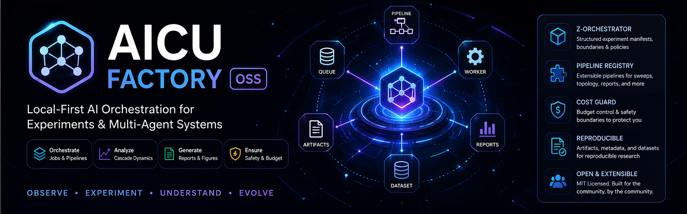

Local-first orchestration for AI experiments, multi-agent workflows, reproducible pipelines, and structured artifact generation.
Run jobs through a simple SQLite-backed execution layer.
Use structured manifests, presets, and run layouts for reproducible studies.
Export validated results for analysis, sharing, or paper packaging.
Apply budget boundaries before expensive runs.
See the repository README for setup instructions and contribution details.